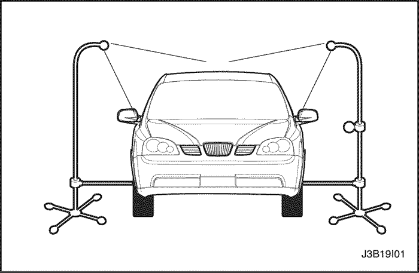
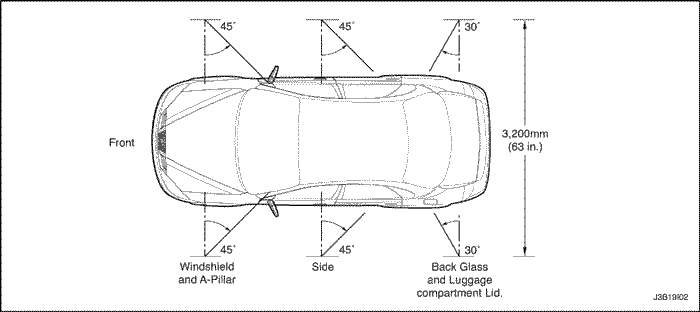

SECCIÓN 9I
FUGAS DE AGUA
ESPECIFICACIONES
Materiales recomendados para la reparación de fugas de agua
| Zonas de infiltración | Materiales de reparación |
| Parabrisas, luneta trasera | Uretano adhesivo, kit de calafateado o equivalente |
| Juntas metálicas | Sellante para uniones por soldadura susceptible de ser pintado |
| Conductos de ventilación | Compuesto de autoestratificación y autoesmaltado 3Mтм o equivalente |
| Pequeñas grietas y agujeros | Sellante antigoteo 3Mтм o equivalente |
| Agujeros grandes | Sellante para juntas y soldaduras en automoción 3Mтм |
| Burletes | Adhesivo para burletes 3Mтм 08011 o equivalente |
| Tornillos, espárragos y prisioneros | Tira para calafatear |
Especificaciones básicas para la prueba de agua
| Aplicación | Descripción |
| Tipo de boquilla | Tobera pulverizadora nº 1/2 GG-25 o equivalente con un ángulo incluido de 60°. |
| Altura de la boquilla | 1.600 mm (63,0 pulg.) aproximadamente desde el suelo. |
| Caudal | 14 L (3,7 gal.) por minuto |
| Presión | 155 kPa (22,5 lbs/pulg2) medidos en la boquilla. |
| Posición en el banco de pruebas del parabrisas y del montante A | Aproximadamente 30° hacia abajo, 45° hacia atrás y orientado hacia la esquina del parabrisas |
| Posición del banco de pruebas para la comprobación del montante B | Aproximadamente 30° hacia abajo, 45° hacia atrás y orientado hacia el centro de la puerta trasera |
| Posición en el banco de pruebas del capó trasero y de la luneta trasera | Aproximadamente 30° hacia abajo, 30° hacia delante y orientado aproximadamente 610 mm (24,0 pulg.) desde la esquina de la luneta trasera |
Diagnóstico
Diagnóstico de fugas de agua
La reparación de las infiltraciones de agua en la carrocería requiere una comprobación y diagnóstico adecuados. Repare las infiltraciones ajustando las piezas mal alineadas y utilizando los materiales de reparación adecuados. En primer lugar, se debe determinar la causa de la infiltración. Por ejemplo, ésta puede ocurrir cuando el vehículo está estacionado en una superficie inclinada, o el agua puede aparecer solamente en el compartimento de la rueda de repuesto. En segundo lugar, compruebe la zona del origen de la infiltración utilizando los siguientes métodos de comprobación. Si se halla la zona de infiltración, determine el punto exacto de entrada utilizando una manguera de agua o de aire. Si no queda bien definida, utilice el banco de pruebas para determinarla. Quizá sea necesario desmontar algunos paneles de guarnecido interior o algunas piezas para localizar las infiltraciones.
Importante: Es necesario encontrar el origen de todas las infiltraciones antes de efectuar cualquier reparación. Las reparaciones al azar pueden acabar con la infiltración, pero sólo temporalmente, y dificultarán futuras reparaciones. Continúe las pruebas de localización en la zona general para asegurarse de que se hayan encontrado todas las infiltraciones.
Comprobación general
- Monte el banco de pruebas de infiltraciones de agua.


- Tubo de 1/2 pulgada por 36 pulgadas
- Tobera pulverizadora nº 1/2 GG-25 o equivalente con una altura de 1.600 mm desde el suelo
- Acoplamiento de 1/2 pulgada
- T de reducción de 1/2 pulgada por 1/2 pulgada por 1/4 de pulgada (sólo en el lado derecho)
- Acoplamiento de 1/2 pulgada (sólo en el lado izquierdo)
- Cruz de 1/2 pulgada (sólo en el lado derecho)
- T de 1/2 pulgada (sólo en el lado izquierdo)
- Manguito para conexión de tubo a tubo flexible de 1/2 pulgada (sólo en el lado derecho)
- Acoplamiento hembra para manguito de 5/8 de pulgada
- Manguito de entrada de 5/8 de pulgada (2 pies de largo, sólo lado derecho)
- Racor de cierre de 1/2 pulgada
- Cruz de 1/2 pulgada con tapón soldado de 1/2 pulgada
- Racor de 1/2 pulgada por 12 pulgadas
- Tapón de 1/2 pulgada
- Acoplamiento hembra para manguito de 5/8 de pulgada
- Manguito transversal de 5/8 de pulgada (12 pies de largo)
- Acoplamiento rápido del manguito de 5/8 de pulgada.
- Manguito para conexión de tubo a tubo flexible de 1/2 pulgada
- Tubo de 1/2 pulgada por 30 pulgadas (recto)
- Manómetro de presión de agua de 1/4 de pulgada (sólo en el lado derecho)
- Prepare el banco de pruebas de infiltraciones de agua.
- Prepare el banco de pruebas de infiltraciones de agua.

- Efectúe la prueba de infiltraciones de agua con el banco de pruebas. Consulte el apartado "Especificaciones del banco de pruebas de infiltración de agua" de esta sección.
- Efectúe la prueba de infiltraciones de agua con el banco de pruebas. Consulte el apartado "Especificaciones del banco de pruebas de infiltración de agua" de esta sección.
- Si la presión del agua de la red no llega a la presión necesaria de 155 kPa (22,5 lbs/pulg2), acerque los dos bancos al vehículo de modo que los dos chorros se superpongan.
- Si la presión del agua de la red no llega a la presión necesaria de 155 kPa (22,5 lbs/pulg2), acerque los dos bancos al vehículo de modo que los dos chorros se superpongan.

Comprobación localizada (Comprobación de los puntos)
- Efectúe la comprobación localizada con una manguera de agua o de aire.
- Empiece la prueba rociando agua o aire por la base de la zona de la posible infiltración. Continúe rociando agua o aire hacia arriba hasta hallarla.
Comprobación con manguera de agua
- Solicite a otra persona que entre en el vehículo para que localice con exactitud la infiltración.
- Utilice la manguera de agua sin boquilla.

- Empiece rociando el agua en la base de la zona de la posible infiltración. Continúe rociando el agua hacia arriba hasta encontrar el punto.
- Empiece rociando el agua en la base de la zona de la posible infiltración. Continúe rociando el agua hacia arriba hasta encontrar el punto.

Comprobación con manguera de aire
- Aplique agua jabonosa por el exterior del vehículo, en la zona de la posible infiltración.
- Inyecte aire desde el interior del vehículo. La presión del aire no debe sobrepasar los 205 kPa (29,7 lbs/pulg2).
- Determine el lugar de las infiltraciones observando las burbujas formadas por el agua jabonosa.

MANTENIMIENTO Y REPARACIÓN
servicio con vehículo en marcha

Reparación de fugas de agua
Algunas infiltraciones de agua a través de la junta del cristal se pueden reparar sin tener que quitarlo.
Importante: Este tipo de reparación solamente se puede efectuar con cristales instalados con uretano.
- Desmonte la moldura de cierre de la zona de la infiltración. Tal vez haya que desmontar la moldura embellecedora o el cordón para quitar la moldura a fin de localizar la infiltración.
- Mientras rocía con agua la zona de la infiltración, presione suavemente el cristal hacia afuera para determinar la extensión de la misma.
- Marque el punto de infiltración.
- Utilice agua para limpiar cualquier suciedad existente en la zona. Seque la zona con una manguera de aire.
- Con una cuchilla, elimine los bordes desiguales de material adhesivo para calafatear alrededor del punto de infiltración en un radio de 75 a 100 mm (de 3 a 4 pulgadas) a ambos lados del punto.

- Con una cuchilla, elimine los bordes desiguales de material adhesivo que haya alrededor del punto de infiltración en un radio de 75 a 100 mm (de 3 a 4 pulgadas) a ambos lados del punto.

- Aplique la imprimación a la zona recortada.

- Deje secar la imprimación durante 5 minutos.
- Aplique el adhesivo sobre el punto de infiltración y en un radio de 75 a 100 mm (3 a 4 pulgadas) a ambos lados de dicho punto.

- Utilice un palillo plano o herramienta similar, inmediatamente después de haber aplicado el adhesivo, para extenderlo dentro y alrededor de la zona de la infiltración y en la unión entre el material original y la carrocería para asegurar un sellado estanco.
- Rocíe, con agua templada o caliente, la zona reparada para determinar si ha desaparecido la infiltración. No rocíe con un chorro fuerte directamente sobre el adhesivo recién aplicado.
- Monte el cordón para quitar la moldura en caso de haberlo desmontado.
- Monte la moldura embellecedora en caso de haberla quitado.
- Monte la moldura de cierre.
Importante: Una vez finalizada la reparación, vuelva a comprobar utilizando el banco de pruebas. No proceda a una prueba localizada en las nuevas zonas recién reparadas, ya que el material utilizado podría saltar bajo una presión anormal.